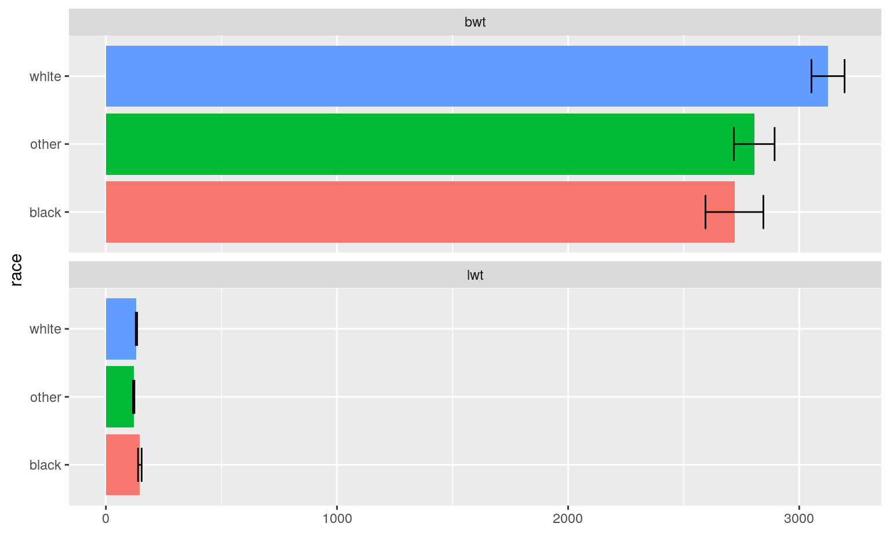
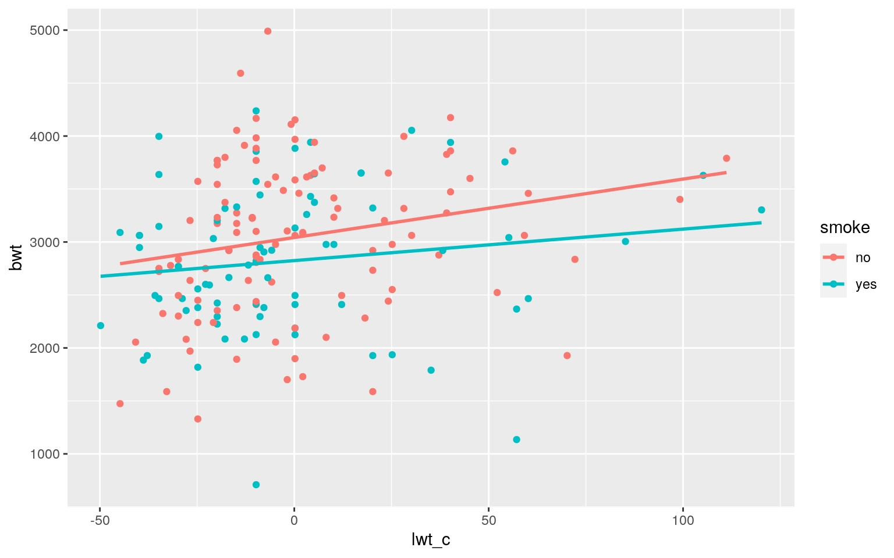
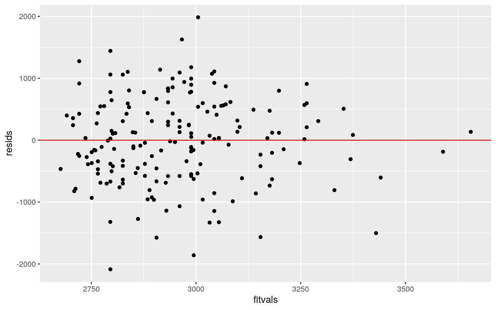
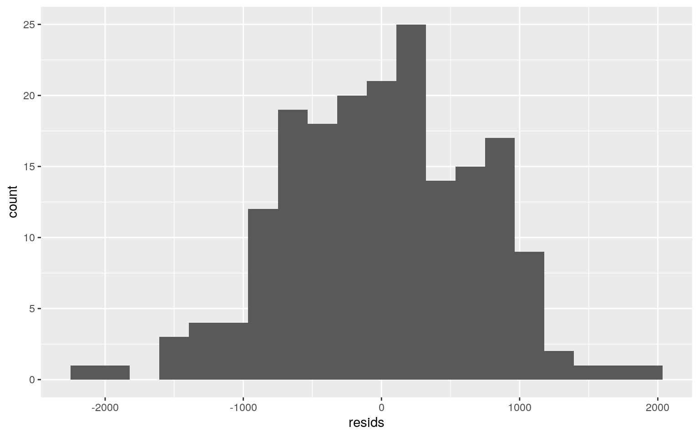
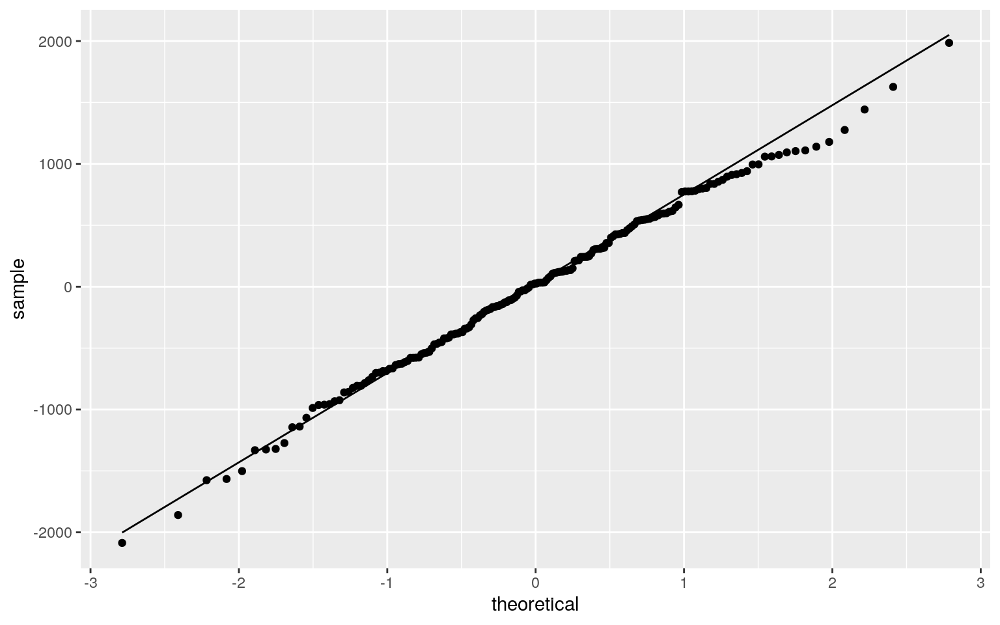
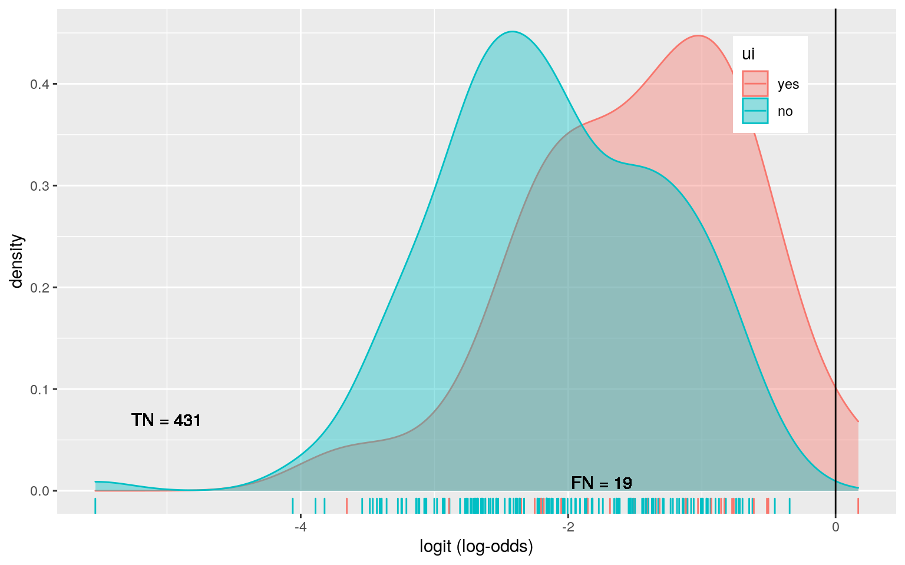
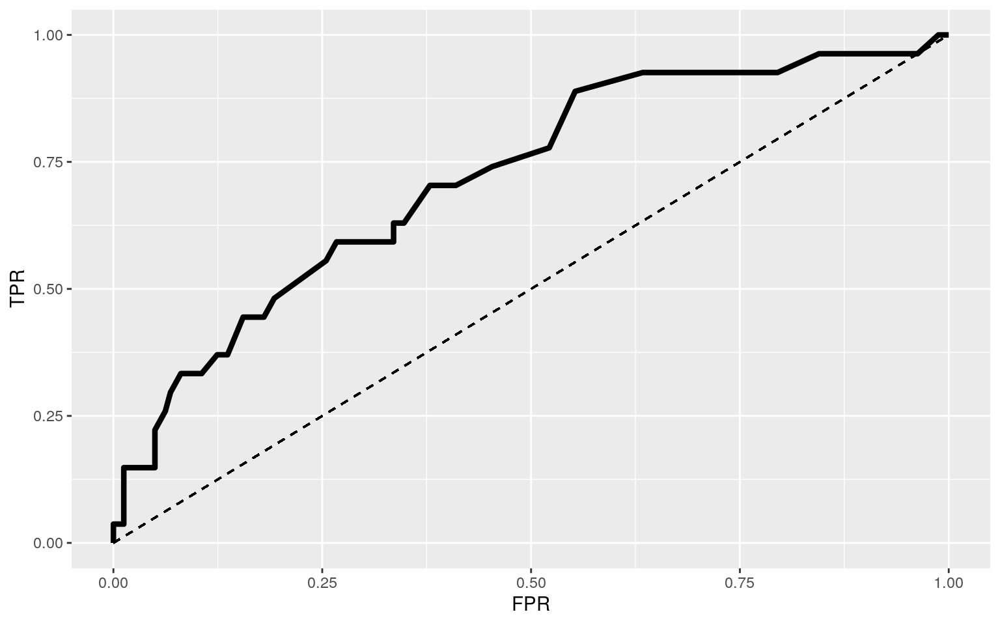

A knitted R Markdown document (preferably HTML) and the raw R Markdown file (as .Rmd) should both be submitted to Canvas by 11:59pm on the due date. These two documents will be graded jointly, so they must be consistent (i.e., don’t change the R Markdown file without also updating the knitted document). In the .Rmd file for Project 2, you can copy the first code-chunk into your project .Rmd file to get better formatting. Notice that you can adjust the opts_chunk$set(…) above to set certain parameters if necessary to make the knitting cleaner (you can globally set the size of all plots, etc). You can copy the set-up chunk in Project2.Rmd: I have gone ahead and set a few for you (such as disabling warnings and package-loading messges when knitting)!
Like before, I envision your written text forming something of a narrative structure around your code/output. All results presented must have corresponding code. Any answers/results/plots etc. given without the corresponding R code that generated the result will not be graded. Furthermore, all code contained in our project document should work properly. Please do not include any extraneous code or code which produces error messages. (Code which produces warnings is fine as long as you understand what the warnings mean.)
Find one dataset with at least 5 variables (ideally more!) that you want to use to build models/test hypotheses. At least one should be categorical (with 2-5 groups, ideally; definitely fewer than 10) and at least two should be numeric (taking on more than 10 distinct values). Ideally, at least of your variables will be binary (if not, you will have to create one by discretizing a numeric or collapsing levels of a categorical). You will need a minimum of 40 observations (at least 10 observations for every explanatory variable you have, ideally 20+ observations/variable).
It is perfectly fine to use either dataset (or the merged dataset, or a subset of your variables) from Project 1. However, I might encourage you to diversify things a bit and choose a different dataset to work with (particularly if the variables did not reveal interesting associations in Project 1 that you want to follow up with). The only requirement/restriction is that you may not use data from any examples we have done in class or lab. It would be a good idea to pick more cohesive data this time around (i.e., variables that you actually thing might have a relationship you would want to test). Think more along the lines of your Biostats project.
Again, you can use data from anywhere you want (see bottom for resources)! If you want a quick way to see whether a built-in (R) dataset has binary and/or character (i.e., categorical) variables, check out this list: https://vincentarelbundock.github.io/Rdatasets/datasets.html.
birthwt <- readr::read_csv('birthwt.csv')
birthwt %>% glimpse()## Rows: 188
## Columns: 9
## $ age <dbl> 19, 33, 20, 21, 18, 21, 22, 17, 29, 26, 19,
19, 22, 30, 18, 18, 15, 25, 20, 28, 32,…
## $ lwt <dbl> 182, 155, 105, 108, 107, 124, 118, 103, 123,
113, 95, 150, 95, 107, 100, 100, 98, 1…
## $ race <chr> "black", "other", "white", "white",
"white", "other", "white", "other", "white", "w…
## $ smoke <chr> "no", "no", "yes", "yes", "yes", "no",
"no", "no", "yes", "yes", "no", "no", "no", …
## $ ptl <chr> "no", "no", "no", "no", "no", "no", "no",
"no", "no", "no", "no", "no", "no", "yes"…
## $ ht <chr> "no", "no", "no", "no", "no", "no", "no",
"no", "no", "no", "no", "no", "yes", "no"…
## $ ui <chr> "yes", "no", "no", "yes", "yes", "no", "no",
"no", "no", "no", "no", "no", "no", "y…
## $ ftv <chr> "none", "two or more", "one", "two or more",
"none", "none", "one", "one", "one", "…
## $ bwt <dbl> 2523, 2551, 2557, 2594, 2600, 2622, 2637,
2637, 2663, 2665, 2722, 2733, 2751, 2750,…The data came from a study that examined the risk factors associated with low birth weight.Low birth weight is closely linked to childbirth and later health.In 1986, researchers took various measurements on a group of pregnant women at Baystate Medical Center in Springfield, Massachusetts.
age: The mother’s age when the child was born.
lwt: The mother’s weight (lbs) just prior to pregnancy.
race: Race of the mother.
smoke: Did the mother smoke during pregnancy?
ptl : Has the mother had previous premature labors?
ht: Does the mother have a history of hypertension?
ui : Was urinary irritation present during pregnancy?
ftv : The number of doctor visits before birth.
bwt : The child’s weight (g).
man1 <- manova(cbind(lwt,bwt)~race, data=birthwt)
summary(man1)## Df Pillai approx F num Df den Df Pr(>F)
## race 2 0.14334 7.1411 4 370 1.511e-05 ***
## Residuals 185
## ---
## Signif. codes: 0 '***' 0.001 '**' 0.01 '*' 0.05 '.' 0.1
' ' 1summary.aov(man1)## Response lwt :
## Df Sum Sq Mean Sq F value Pr(>F)
## race 2 14427 7213.5 8.2697 0.0003631 ***
## Residuals 185 161372 872.3
## ---
## Signif. codes: 0 '***' 0.001 '**' 0.01 '*' 0.05 '.' 0.1
' ' 1
##
## Response bwt :
## Df Sum Sq Mean Sq F value Pr(>F)
## race 2 5675025 2837512 5.7957 0.00362 **
## Residuals 185 90574761 489593
## ---
## Signif. codes: 0 '***' 0.001 '**' 0.01 '*' 0.05 '.' 0.1
' ' 1pairwise.t.test(birthwt$lwt,birthwt$race, p.adj="none")##
## Pairwise comparisons using t tests with pooled SD
##
## data: birthwt$lwt and birthwt$race
##
## black other
## other 0.00012 -
## white 0.02537 0.01129
##
## P value adjustment method: nonepairwise.t.test(birthwt$bwt,birthwt$race, p.adj="none")##
## Pairwise comparisons using t tests with pooled SD
##
## data: birthwt$bwt and birthwt$race
##
## black other
## other 0.5972 -
## white 0.0097 0.0047
##
## P value adjustment method: noneFrom manova We can see overall MANOVA is significant, so we perform follow-up ANOVAs foreach variable, and they both significant: For bwt and lwt, at least one race differs.Then perform t test, bwt is more significant.
We did 1 MANOVA, 2 ANOVAs, and 6 t tests. probability of at least one type I error is 1-0.95^9 = 0.3698. To keep Type I error rate (FWER) at .05, set α=0.05/9=0.0056.
library(vegan)
dists <- birthwt%>%select(lwt, bwt) %>% dist()
adonis(dists~race,data=birthwt)##
## Call:
## adonis(formula = dists ~ race, data = birthwt)
##
## Permutation: free
## Number of permutations: 999
##
## Terms added sequentially (first to last)
##
## Df SumsOfSqs MeanSqs F.Model R2 Pr(>F)
## race 2 5689452 2844726 5.8001 0.059 0.007 **
## Residuals 185 90736133 490466 0.941
## Total 187 96425584 1.000
## ---
## Signif. codes: 0 '***' 0.001 '**' 0.01 '*' 0.05 '.' 0.1
' ' 1birthwt%>%select(race,lwt,bwt)%>%pivot_longer(-1,names_to='DV', values_to='measure')%>%
ggplot(aes(race,measure,fill=race))+geom_bar(stat="summary")+geom_errorbar(stat="summary", width=.5)+
facet_wrap(~DV, nrow=2)+coord_flip()+ylab("")+theme(legend.position = "none")
From the plot bwt is more different across races.
3. (40 pts) Build a linear regression model predicting one of your response variables from at least 2 other variables, including their interaction. Mean-center any numeric variables involved in the interaction.
birthwt$lwt_c <- birthwt$lwt - mean(birthwt$lwt)
fit<-lm(bwt ~ smoke*lwt_c, data = birthwt)
summary(fit)##
## Call:
## lm(formula = bwt ~ smoke * lwt_c, data = birthwt)
##
## Residuals:
## Min 1Q Median 3Q Max
## -2086.31 -466.49 25.62 514.24 1985.22
##
## Coefficients:
## Estimate Std. Error t value Pr(>|t|)
## (Intercept) 3042.380 66.571 45.701 <2e-16 ***
## smokeyes -217.907 104.046 -2.094 0.0376 *
## lwt_c 5.518 2.336 2.362 0.0192 *
## smokeyes:lwt_c -2.546 3.347 -0.761 0.4479
## ---
## Signif. codes: 0 '***' 0.001 '**' 0.01 '*' 0.05 '.' 0.1
' ' 1
##
## Residual standard error: 700.8 on 184 degrees of freedom
## Multiple R-squared: 0.06105, Adjusted R-squared: 0.04574
## F-statistic: 3.988 on 3 and 184 DF, p-value: 0.008795From the Coefficients matrix we can see the weight of mothers who smoke are 217.9 lower than the mothers who don’t smoke. For every 1-unit increase in mother’s weight, predicted child weight goes up 5.518. The mothers who smoke their children’s weight is 2.546 lower than the children whose mothers don’t smoke
- Plot the regression using `ggplot()` using geom_smooth(method="lm"). If your interaction is numeric by numeric, refer to code in the slides to make the plot or check out the `interactions` package, which makes this easier. If you have 3 or more predictors, just chose two of them to plot for convenience. (10)birthwt%>%ggplot(aes(lwt_c,bwt,color = smoke))+geom_point()+geom_smooth(method = 'lm',se=F)
- What proportion of the variation in the outcome does your model explain? (4)From the plot we can see bwt of the mothers who don’t smoke is higher than the bwt of the mothers who smoke.
- Check assumptions of linearity, normality, and homoskedasticity either graphically or using a hypothesis test (5)library(sandwich); library(lmtest)
resids<-fit$residuals
fitvals<-fit$fitted.values
ggplot()+geom_point(aes(fitvals,resids))+geom_hline(yintercept=0, col="red")
ggplot()+geom_histogram(aes(resids), bins=20)
ggplot()+geom_qq(aes(sample=resids))+geom_qq_line(aes(sample=resids)) From the graph inearity, homoskedasticity and normality look OK.
- Regardless, recompute regression results with robust standard errors via `coeftest(..., vcov=vcovHC(...))`. Discuss significance of results, including any changes from before/after robust SEs if applicable. (10)summary(fit)$coef[,1:2]## Estimate Std. Error
## (Intercept) 3042.379791 66.571423
## smokeyes -217.906559 104.045772
## lwt_c 5.517538 2.336399
## smokeyes:lwt_c -2.546061 3.347337coeftest(fit, vcov=vcovHC(fit))[,1:2] ## Estimate Std. Error
## (Intercept) 3042.379791 68.271797
## smokeyes -217.906559 105.199656
## lwt_c 5.517538 2.212692
## smokeyes:lwt_c -2.546061 3.171973Compare to normal SE, the Robust SE is higher
temp <- birthwt
samp_distn<-replicate(5000, {
boot_dat<-temp[sample(nrow(temp),replace=TRUE),]
fit<-lm(bwt ~ smoke*lwt_c, data = boot_dat)
coef(fit)
})
samp_distn%>%t%>%as.data.frame%>%summarize_all(sd)## (Intercept) smokeyes lwt_c smokeyes:lwt_c
## 1 68.03923 105.4371 2.197603 3.219327Bootstrapped standard errors is smaller than the original SEs and the robust SEs
5. (30 pts) Fit a logistic regression model predicting a binary variable (if you don’t have one, make/get one) from at least two explanatory variables (interaction not necessary).
data<-birthwt%>%mutate(y=ifelse(ui=="yes",1,0))
fit<-glm(y~bwt+age, data=data, family="binomial")
coeftest(fit)##
## z test of coefficients:
##
## Estimate Std. Error z value Pr(>|z|)
## (Intercept) 2.56312680 1.41992894 1.8051 0.0710576 .
## bwt -0.00110426 0.00032635 -3.3836 0.0007154 ***
## age -0.05752860 0.04681449 -1.2289 0.2191232
## ---
## Signif. codes: 0 '***' 0.001 '**' 0.01 '*' 0.05 '.' 0.1
' ' 1bwt has a significant impact on ui and it has a negative effect
- Report a confusion matrix for your logistic regression (5)data$prob <- predict(fit,type="response")
data$predicted <- ifelse(data$prob>.5,"yes","no")
data$ui<-factor(data$ui,levels=c("yes","no"))
table(truth=data$ui, prediction=data$predicted)%>%addmargins## prediction
## truth no yes Sum
## yes 26 1 27
## no 161 0 161
## Sum 187 1 188- Compute and discuss the Accuracy, Sensitivity (TPR), Specificity (TNR), Precision (PPV), and AUC of your model (5)class_diag<-function(probs,truth){
tab<-table(factor(probs>.5,levels=c("FALSE","TRUE")),truth)
acc=sum(diag(tab))/sum(tab)
sens=tab[2,2]/colSums(tab)[2]
spec=tab[1,1]/colSums(tab)[1]
ppv=tab[2,2]/rowSums(tab)[2]
if(is.numeric(truth)==FALSE & is.logical(truth)==FALSE) truth<-as.numeric(truth)-1
#CALCULATE EXACT AUC
ord<-order(probs, decreasing=TRUE)
probs <- probs[ord]; truth <- truth[ord]
TPR=cumsum(truth)/max(1,sum(truth))
FPR=cumsum(!truth)/max(1,sum(!truth))
dup<-c(probs[-1]>=probs[-length(probs)], FALSE)
TPR<-c(0,TPR[!dup],1); FPR<-c(0,FPR[!dup],1)
n <- length(TPR)
auc<- sum( ((TPR[-1]+TPR[-n])/2) * (FPR[-1]-FPR[-n]) )
data.frame(acc,sens,spec,ppv,auc)
}
class_diag(data$prob,data$ui)## acc sens spec ppv auc
## no 0.1382979 0 0.962963 0 0.2815735- Using ggplot, make a density plot of the log-odds (logit) colored/grouped by your binary outcome variable (5)data$logit<-predict(fit,type="link")
data%>%ggplot()+geom_density(aes(logit,color=ui,fill=ui), alpha=.4)+
theme(legend.position=c(.85,.85))+geom_vline(xintercept=0)+xlab("logit (log-odds)")+
geom_rug(aes(logit,color=ui))+
geom_text(x=-5,y=.07,label="TN = 431")+
geom_text(x=-1.75,y=.008,label="FN = 19")+
geom_text(x=1,y=.006,label="FP = 13")+
geom_text(x=5,y=.04,label="TP = 220") - Generate an ROC curve (plot) and calculate AUC (either manually or with a package); interpret (5)
sens<-function(p,data=data) mean(data[data$y==1,]$prob>p)
spec<-function(p,data=data) mean(data[data$y==0,]$prob<p)
sensitivity<-sapply(seq(0,1,.01),sens,data)
specificity<-sapply(seq(0,1,.01),spec,data)
ROC1<-data.frame(sensitivity,specificity,cutoff=seq(0,1,.01))
ROC1$TPR<-sensitivity
ROC1$FPR<-1-specificity
ROC1%>%ggplot(aes(FPR,TPR))+geom_path(size=1.5)+geom_segment(aes(x=0,y=0,xend=1,yend=1),lty=2)+
scale_x_continuous(limits = c(0,1)) From the AUC and the ROC plot we can see it is not great. Hard to predict ui from just bwt and age!
6. (25 pts) Perform a logistic regression predicting the same binary response variable from ALL of the rest of your variables (the more, the better!)
birthwt <- readr::read_csv('/stor/home/cs59386/Project1/birthwt.csv')
data<-birthwt%>%mutate(y=ifelse(ui=="yes",1,0)) %>% select(-ui)
fit <- glm(y~., data=data, family="binomial")
prob<-predict(fit,type="response")
class_diag(prob,data$y) %>% as.matrix()## acc sens spec ppv auc
## 1 0.8670213 0.1111111 0.9937888 0.75 0.7918104We can see AUC is fair. But we need to do the CV.
- Perform 10-fold (or repeated random sub-sampling) CV with the same model and report average out-of-sample classification diagnostics (Accuracy, Sensitivity, Specificity, Precision, and AUC); interpret AUC and compare with the in-sample metrics (10)set.seed(1234)
k=10
# your code here
data2 <- data %>% sample_frac
folds <- ntile(1:nrow(data2),n=10)
diags<-NULL
for(i in 1:k){
train <- data2[folds!=i,]
test <- data2[folds==i,]
truth <- test$y
fit<-glm(y~age,data=train,family="binomial")
probs <- predict(fit, newdata=test, type="response")
diags<-rbind(diags,class_diag(probs,truth))
}
summarize_all(diags,mean)%>% as.matrix()## acc sens spec ppv auc
## [1,] 0.8567251 0 1 NaN 0.5598284After doing 10-fold CV, AUC is lower. The drop in AUC from the original indicates overfitting.
- Perform LASSO on the same model/variables. Choose lambda to give the simplest model whose accuracy is near that of the best (i.e., `lambda.1se`). Discuss which variables are retained. (5)library(glmnet)
set.seed(1234)
y<-as.matrix(data$y) #grab response
x<-model.matrix(y~.,data=data)[,-1] #grab predictors
cv<-cv.glmnet(x,y,family="binomial")
lasso<-glmnet(x,y,family="binomial",lambda=cv$lambda.min)
coef(lasso)## 11 x 1 sparse Matrix of class "dgCMatrix"
## s0
## (Intercept) 1.3050469320
## age -0.0152007314
## lwt -0.0043900263
## raceother .
## racewhite .
## smokeyes .
## ptlyes 0.5860529637
## htyes -1.2018255391
## ftvone .
## ftvtwo or more .
## bwt -0.0008016066lasso_dat <- data %>%
mutate(ptl= ifelse(ptl=="yes", 1, 0),ht= ifelse(ht=="yes", 1, 0), ) %>%
select(age, lwt,ptl,ht,bwt,y)
fit<-glm(y~.,data=lasso_dat,family="binomial")
prob<-predict(fit,type="response")
class_diag(prob,lasso_dat$y) %>% as.matrix()## acc sens spec ppv auc
## 1 0.8617021 0.07407407 0.9937888 0.6666667 0.7782379- Perform 10-fold CV using only the variables lasso selected: compare model's out-of-sample AUC to that of your logistic regressions above (5)set.seed(1234)
k=10
# your code here
data2 <- lasso_dat %>% sample_frac
folds <- ntile(1:nrow(data2),n=10)
diags<-NULL
for(i in 1:k){
train <- data2[folds!=i,]
test <- data2[folds==i,]
truth <- test$y
fit<-glm(y~.,data=train,family="binomial")
probs <- predict(fit, newdata=test, type="response")
diags<-rbind(diags,class_diag(probs,truth))
}
summarize_all(diags,mean)%>% as.matrix()## acc sens spec ppv auc
## [1,] 0.8409357 0.05833333 0.9708333 NaN 0.7256559You can choose ANY datasets you want that meet the above criteria for variables and observations. You can make it as serious as you want, or not, but keep in mind that you will be incorporating this project into a portfolio webpage for your final in this course, so choose something that really reflects who you are, or something that you feel will advance you in the direction you hope to move career-wise, or something that you think is really neat, or whatever. On the flip side, regardless of what you pick, you will be performing all the same tasks, so it doesn’t end up being that big of a deal.
If you are totally clueless and have no direction at all, log into the server and type
data(package = .packages(all.available = TRUE))This will print out a list of ALL datasets in ALL packages installed on the server (a ton)! Scroll until your eyes bleed! Actually, do not scroll that much… To start with something more manageable, just run the command on your own computer, or just run data() to bring up the datasets in your current environment. To read more about a dataset, do ?packagename::datasetname.
If it is easier for you, and in case you don’t have many packages installed, a list of R datasets from a few common packages (also downloadable in CSV format) is given at the following website: https://vincentarelbundock.github.io/Rdatasets/datasets.html.
A good package to download for fun/relevant data is fivethiryeight.
Run install.packages("fivethirtyeight"), load the packages with library(fivethirtyeight), run data(), and then scroll down to view the datasets. Here is an online list of all 127 datasets (with links to the 538 articles). Lots of sports, politics, current events, etc.
If you have already started to specialize (e.g., ecology, epidemiology) you might look at discipline-specific R packages (vegan, epi, respectively). We will be using some tools from these packages later in the course, but they come with lots of data too, which you can explore according to the directions above
However, you emphatically DO NOT have to use datasets available via R packages! In fact, I would much prefer it if you found the data from completely separate sources and brought them together (a much more realistic experience in the real world)! You can even reuse data from your SDS328M project, provided it shares a variable in common with other data which allows you to merge the two together (e.g., if you still had the timestamp, you could look up the weather that day: https://www.wunderground.com/history/). If you work in a research lab or have access to old data, you could potentially merge it with new data from your lab!
Here is a curated list of interesting datasets (read-only spreadsheet format): https://docs.google.com/spreadsheets/d/1wZhPLMCHKJvwOkP4juclhjFgqIY8fQFMemwKL2c64vk/edit
Here is another great compilation of datasets: https://github.com/rfordatascience/tidytuesday
Here is the UCI Machine Learning Repository: https://archive.ics.uci.edu/ml/index.php
Here is another good general place to look: https://www.kaggle.com/datasets
To help narrow your search down or to see interesting variable ideas, check out https://www.tylervigen.com/spurious-correlations. This is the spurious correlations website, and it is fun, but if you look at the bottom of each plot you will see sources for the data. This is a good place to find very general data (or at least get a sense of where you can scrape data together from)!
If you are interested in medical data, check out www.countyhealthrankings.org
If you are interested in scraping UT data, they make loads of data public (e.g., beyond just professor CVs and syllabi). Check out all the data that is available in the statistical handbooks: https://reports.utexas.edu/statistical-handbook
Data.gov 186,000+ datasets!
Social Explorer is a nice interface to Census and American Community Survey data (more user-friendly than the government sites). May need to sign up for a free trial.
U.S. Bureau of Labor Statistics
Gapminder, data about the world.
…